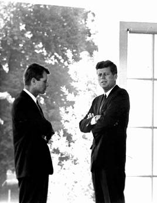

Was Kennedy Planning to Pull Out of Vietnam?

Robert Kennedy was not merely John Kennedy's brother, he was his closest political ally and closest confidant. So what Bobby said about John's view of the war in Vietnam is not merely speculation or opinion.
The following is a passage from an oral history interview done with Bobby in April, 1964 by the John F. Kennedy Library.
Third Oral History Interview with
ROBERT F. KENNEDY
April 30, 1964
New York, New York
By John Bartlow Martin
For the John F. Kennedy Library
[BEGIN TAPE V, REEL 1]
[snipping earlier portion of interview]
- Martin:
- All right. Now, Vietnam began in the first--on the
3rd of January started appearing rather prominently in the papers and,
of course, still is, and was all through '63. Do you want to talk
about it now? Do you want to wait till we come and pick up the coup
later? In, on, in January, the Vietnamese killed three Americans and
shot down five helicopters.
- Kennedy:
- Viet Cong, you mean.
- Martin:
- That's right. That's what I mean, I'm sorry, Viet
Cong. A little later Mansfield said that we were, this thing was
turning into an American war and wasn't justified by our national
interest; we hadn't any business going in so deep, but we kept going
in deeper. The president sent Maxwell Taylor and McNamara out there.
And then, and Lodge, he appointed Lodge as the ambassador--and you
remember the hassle between the CIA and Lodge. The president brought
the CIA fellow back, and, in the end, there was the coup against the
Diem brothers. Do you want to discuss the whole thing now? You must
have been in on a good deal of this.
- Kennedy:
- Yes. Well, yeah, what do you want to start with?
- Martin:
- All right. At the beginning we seemed to have our
lines crossed. I mean, the majority leader in the Senate, Mansfield,
was saying this was not an American war, and he didn't think it
was--that our--it should be--not, not--should not be an American war.
He didn't think our heavy commitment there was justified. How'd you
feel about it; how'd the president feel about it; and at what point
did we get our lines straightened out?
- Kennedy:
- Well, I don't think that . . .
- Martin:
- Did I make myself clear?
- Kennedy:
- No, I don't think that fact, Senator Mansfield or
somebody in the Senate takes a position, necessarily means .. .
- Martin:
- Well, he was majority leader.
- Kennedy:
- Yeah, but, you know, he's frequently taken that,
those, that line or that position on some of these matters. I don't
think that the fact he has an independent view from the executive
branch of the government, particularly in Southeast Asia, indicates
that the lines aren't straight. I, no, I just, I think every. . . .
I, the president felt that the. . . . He had a strong, overwhelming
reason for being in Vietnam and that we should win the war in Vietnam.
- Martin:
- What was the overwhelming reason?
- Kennedy:
- Just the loss of all of Southeast Asia if you lost
Vietnam. I think everybody was quite clear that the rest of Southeast
Asia would fall.
- Martin:
- What if it did?
- Kennedy:
- Just have profound effects as far as our position
throughout the world, and our position in a rather vital part of the
world. Also, it would affect what happened in India, of course, which
in turn has an effect on the Middle East. Just, it would have,
everybody felt, a very adverse effect. It would have an effect on
Indonesia, hundred million population. All of these countries would
be affected by the fall of Vietnam to the Communists, particularly as
we had made such a fuss in the United States both under President
Eisenhower and President Kennedy about the preservation of the
integrity of Vietnam.
- Martin:
- There was never any consideration given to pulling
out?
- Kennedy:
- No.
- Martin:
- But the same time, no disposition to go in all . . .
- Kennedy:
- No . . .
- Martin:
- . . . in an all out way as we went into Korea. We
were trying to avoid a Korea, is that correct?
- Kennedy:
- Yes, because I, everybody including General MacArthur
felt that land conflict between our troops, white troops and Asian,
would only lead to, end in disaster. So it was. . . . We went in as
advisers, but to try to get the Vietnamese to fight themselves,
because we couldn't win the war for them. They had to win the war for
themselves.
- Martin:
- It's generally true all over the world, whether it's
in a shooting war or a different kind of a war. But the president was
convinced that we had to keep, had to stay in there . . .
- Kennedy:
- Yes.
- Martin:
- . . . and couldn't lose it.
- Kennedy:
- Yes.
- Martin:
- And if Vietnamese were about to lose it, would he
propose to go in on land if he had to?
- Kennedy:
- Well, we'd face that when we came to it.
- Martin:
- Mm hm. Or go with air strikes, or--direct from
carriers, I mean, something like that?
- Kennedy:
- But without. . . . It didn't have to be faced at that
time. In the first place, we were winning the war in 1962 and 1963,
up until May or so of 1963. The situation was getting progressively
better. And then I . . .
- Martin:
- But then it got progre-- started going downhill,
didn't it?
- Kennedy:
- Yes, and then we had all the problems with the
Buddhists and the . . .
- Martin:
- Yeah.
- Kennedy:
- And, uh . . .
- Martin:
- Why did they go down, why did they get bad, Bob?
- Kennedy:
- Well, I just think he was just, Diem wouldn't make
even the slightest concessions. He was difficult to reason with,
well, with the. . . . And then it was built up tremendously in an
adverse fashion here in the United States and that was played back in
Vietnam, and . . . . And I think just the people themselves became
concerned about it. And so, it began to, the situation began to
deteriorate in the spring of 1962, uh, spring of 1963. I think David
Halberstam, from the New York Times' articles, had a strong effect on
molding public opinion: the fact that the situation was
unsatisfactory. Our problem was that thinking of Halberstam sort of
as the Ma-- what Matthews [unidentified] did in Cuba, that Batista
[Fulgencio R. Batista] was not very satisfactory, but the important
thing was to try to get somebody who could replace him and somebody
who could keep, continue the war and keep the country united, and that
was far more difficult. So that was what was of great concern to all
of us during this period of time. Nobody liked Diem particularly, but
how to get rid of him and get somebody that would continue the war,
not split the country in two, and therefore lose not only the war but
the country. That was the great problem.
So would Kennedy have fallen into the Vietnam quagmire just as Johnson did? No one can be sure, and Kennedy supporters can certainly believe that he would have avoided Johnson's massive committment -- even though he had the same advisors as Johnson and the same desire to prevent a Communist takeover.
However, the Oliver Stone version of the Kennedy assassination, as expressed in the movie JFK, holds that Kennedy had already decided to pull out of Vietnam, and was killed for that reason.
That's just not so.
 Return to Kennedy Assassination Home Page
Return to Kennedy Assassination Home Page